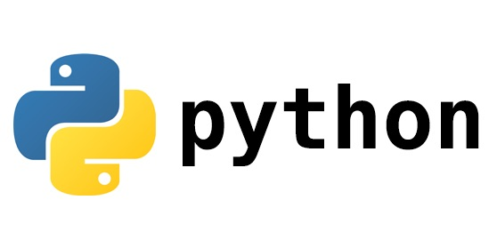

Python 简明教程

Python is a programming language that lets you work more quickly and integrate your systems more effectively. – python.org
0 安装
可以直接从官网 python.org/downloads 下载安装，最新版本是 3.9.0。安装过程和普通的 Windows 软件一致。安装完成后，需将安装路径添加到环境变量中。
如果你使用的是 Ubuntu 等 Linux 发行版或 MacOS 系统，操作系统将自带 Python，无需安装。如果操作系统上只有 Python2，在 Debian 和 Ubuntu 上可通过如下方式安装 Python3：
1 | sudo apt-get update && sudo apt-get install python3 |
在 MacOS 上，可通过如下方式安装
1 | brew install python3 |
若安装成功，命令行运行 python -V 或 python3 -V，你将看到：
1 | $ python3 -V |
1 Hello World
Python 有两种运行方式：交互式和源文件。在命令行中键入 python3 并回车，则进入了 Python 解释器的交互模式：
1 | $ python3 |
接下来，我们接着输入：print("hello world")，按下回车：
1 | >>> print("hello world") |
这样就完成了我们的第一个 Python 程序，向世界问好。print() 是 Python 中的一个内置函数，用来在标准输出中打印信息。
在交互模式下，每输入一行代码，按下回车，运行结果就会打印在屏幕上。因此，我们可以将 Python 当做一个简单的计算器，例如：
1 | >>> 1 + 2 * 100 |
** 是 Python 中的指数运算符，这里表示 2 的 3 次方。
我们在桌面新建文件夹 test，在 test 文件夹中新建文件 main.py，写入：
1 | print("1 + 2 =", 1 + 2) |
保存后，在命令行中切换到 test 文件夹，执行 python main.py，将会看到：
1 | $ python3 main.py |
一般我们使用 IDE，例如 VSCode 或 PyCharm 写 Python 程序。IDE 集成了代码高亮、提示、命令行等功能，能够极大地提升代码的学习和开发效率。
2 基本语法
1 | ok = True # 布尔值，表示真假，True 或 False |
运行这段程序：
1 | python3 main.py |
- 单行注释以符号
#开头。 - 变量一般由数字、字母、下划线构成，但只能以字母或下划线开头。
ok = True，表示将字面量，即布尔值 True 赋值给变量 ok。a = 2，表示将字面量，即整数 2 赋值给变量 ab = 3.56，表示将字面量，即浮点数 3.56 赋值给变量 bc = "hello world"，表示将字符串 hello world 赋值给变量 c。
单行字符串一般使用双引号 "，也可以使用单引号 '，多行字符串通常使用三个单引号或三个双引号。例如：
1 | a = "I'm 极客兔兔" |
执行结果为：
1 | $ python3 main.py |
format 可以格式化字符串，{0} 表示用 format 的第一个参数的值替代，{1} 表示用第二个值替代，以此类推。
format 还有其他使用方式，省略序号或使用键值对：
1 | name, age = "小明", 13 # 一行中可以声明多个变量 |
执行结果：
1 | $ python3 main.py |
如果代码写的有问题，Python 执行时将会报错，例如这段：
1 | age = 13 |
1 | python3 main.py |
报错时打印了发生错误的堆栈信息：
File "main.py", line 2表示错误发生在main.py的第 2 行。ValueError: unexpected '{' in field name表示错误原因是{括号使用有误。在这里，我们没有成对使用大括号作为占位符，导致报错。
3 运算符与表达式
3.1 运算符
常见的加减乘除运算：
1 | 1 + 2 # 加 |
大小比较运算：
1 | 12 < 18 # 小于 |
逻辑运算符：
1 | 12 >= 8 and 5 > 6 # and 布尔与/且，全真为真，有假为假 |
此外还支持 << (左移)、>> (右移)、& (按位与)、| (按位或)、^ (按位异或)、~ (按位取反) 等位运算符。
赋值运算符 =，将 = 右侧的值赋值给左侧，左侧需要一个变量。
1 | a = 2 |
对一个变量进行计算，将计算的结果赋值给该变量，可以简写为：
1 | a = 2 |
3.2 表达式
Python中，值、变量和运算符共同组成的整体称为表达式，通常我们所写出的程序语句包含若干个表达式。例如上述的 3 + 4 即构成了一个简单的表达式。值和变量也被称作为操作数，运算符也被称为操作符。
4 控制流
Python 语句是自上而下执行的，如果在这个过程中，我们希望通过一些条件判断，执行不同的逻辑怎么办呢？可以通过控制流语句实现，Python 中一共有 if、for、while 三个控制流语句。
4.1 if 语句
if 用于检查条件是否为真，如果为真则执行，通常与 else，elif (else if) 结合使用。例如：
1 | age = 13 |
Python 使用缩进代表不同的代码块，一般缩进使用 4 个空格表示。你可以看到 print() 前有 4 个空格。
上述代码可以简化成：
1 | age = 13 |
如果我们有多个条件判断分支时，elif 就能派上用场了：
1 | age = 45 |
4.2 for 语句
有些代码块需要执行多次，这种情况我们可以使用 for 循环语句，例如打印数字 1 - 5：
1 | # main.py |
执行结果为：
1 | python3 main.py |
print()函数默认以换行符结尾，如果我们希望替换成空格，只需要将参数 end 设置为空格即可。range()也是一个内置函数，用于生成数字序列，常用于 for 循环语句中。若只传入一个参数 N，代表生成[0, N)的整数序列，从 0 开始，不包含N。如果我们不想从 0 开始怎么办呢？range()也支持传入多个参数，例如：
1 | for i in range(2, 5): # [2, 5) |
那如果在 for 循环中，遇到某个条件想退出循环呢？通常 for 还与 break 和 continue 结合使用：
1 | for i in range(100): |
continue语句用来跳过当前循环语句块中的其余部分，然后继续执行循环的下一个迭代。break语句用来终止循环。- 因此，
i <= 3时，跳过了 print 语句，i >= 10时循环被终止，那么这个程序将会打印出数字 4 5 6 7 8 9。
4.3 while 语句
与 for 循环语句类似，while 通常也用于循环表达式中。while 后面跟一个条件，条件为真时，执行 while 代码块；条件为假时，终止循环。一般 while 可以替代 for 循环，刚才我们使用 for 打印了数字 1 - 5，接下来用 while 改写：
1 | i = 0 |
同样的，continue 和 break 语句也能在 while 语句中使用。例如我们实现一个简单的功能，用户每输入一个数字，打印这个数字的平方，直到输入 0 时结束。
1 | while True: |
运行结果：
1 | python3 main.py |
while True代表进入无限循环，只有通过break语句才能结束。input()是一个内置函数，用于接受用户的输入，返回一个字符串。input 可以传入一个字符串，作为输入的提示语句。num = int(num)是将 num 转换为整型，因为字符串不能计算平方，只有数字才行。
5 函数
在之前的例子中，我们已经使用了 print、range、input 等 Python 常用的内置函数，对函数已经不陌生了。那函数是什么呢？函数可以理解为一块可以复用的代码块，可以为这个代码块起一个名字（函数名），也可以定义传入的参数（形参），以及返回结果（返回值）。函数定义一般长这个样子：关键字 def 作为函数的标识符，紧接着是函数名，函数名的命名规范与变量一致，通常由数字、字母和下划线构成，以字母或下划线开头。函数名后面有一对小括号和一个冒号 :，里面可以定义参数列表，也可以没有参数。接下来便是一个语句块作为函数体。
1 | def 函数名(参数名1, 参数名2, ...): |
那比如我们实现一个函数 area，用于计算长方形的面积，接受 2 个参数长 length 和宽 width，返回一个值，即面积。
1 | def area(length, width): |
return是 Python 中的一个关键字，用于函数体中，即跳出这个函数，不再执行。return可以跟一个或多个值作为返回值，也可以没有返回值。- 没有返回值时，
return事实上等价于return None，None是一个关键字，表示空。 - 如果函数没有
return语句，系统会自动在函数的结尾添加return None语句。
1 | def calc(a, b): |
1 | def log(mode): |
5.1 局部变量与全局变量
1 | x = 10 # x 是全局变量，可在其他函数中使用 |
我们定义了全局变量 x，在 print_local 中定义了与全局变量同名的局部变量 x，并将 100 赋值给 x，在这里修改的是局部变量的值，局部变量只在这个函数内部有效，全局变量不会受到影响。因此，两次 print_global 的结果都是 10。
定义局部变量的好处在于，控制变量的作用域范围，减少各个函数之间的干扰。全局变量可以在多个函数之间共享，一般建议仅将只读的变量设置为全局变量，比如圆周率 π 的值。那如果我们想修改全局变量怎么办呢？可以使用 global 关键字：
1 | x = 10 # x 是全局变量，可在其他函数中使用 |
在 print_local 中，使用 global x 告诉 Python x 是一个全局变量，而非局部变量。因此 x = 100 将修改全局变量 x 的值。所以第二个 print_global() 将打印 100。
5.2 可选参数与默认值
如果有多个参数，那能不能给某些参数设置默认值，这样用户可以选择性地传入或不传入该参数的值呢？答案是可以的，Python 允许给参数设置默认值，在使用者看来，就像是实现了C++的函数重载一样。
重载函数是函数的一种特殊情况，为方便使用，C++允许在同一范围中声明几个功能类似的同名函数，但是这些同名函数的形式参数（指参数的个数、类型或者顺序）必须不同，也就是说用同一个函数完成不同的功能，这就是重载函数。
1 | def greet(msg, times=1): |
执行结果：
1 | Hi, Jack |
greet函数的功能是打印 msg，默认是1次，但可以通过参数 times 控制。- 带默认值的参数只能位于参数列表的末尾，不能位于非默认值参数前面。例如
def greet(times=1, msg)是不允许的。 - 默认值参数可以有 0 或多个。
Python 中，参数的传递还可以更加地灵活，除了按顺序传入以外，还可以通过键值对的方式传入：
1 | greet('Hi, Jack', times=2) # 混合方式 |
键值对传参特别适用于参数列表非常多，且大部分均有默认参数的情况。无需关注参数的顺序，而只需将需要设置的几个参数传入即可。
5.3 可变参数
Python 还支持可变参数。函数定义时如果参数的个数是不确定的，那么就适合使用可变参数来代替。可变参数有 2 种，元组式(tuple，元组可以认为是一个不可变的有序集合)和字典式(dict)。元组式可变参数用 *参数名 表示，传入的实际参数会构成一个元组，例如：
1 | # 实现一个求和函数，支持传入任意个数字 |
字典式(键值对式)可变参数用**参数名表示，传入的实际参数会构成一个字典(dict)，例如：
1 | def print_student(**students): |
执行结果：
1 | 小明今年 8 岁 |
元组(tuple) 和 字典(dict) 都是 Python 内置的数据结构，我们在下一章节会讲到。
5.4 文档字符串 __doc__
给每一个函数写文档是编程的好习惯，在 Python 中，对每个函数来说，有一个内置的属性 __doc__ 保存了函数的说明文档，Python 中称之为 DocStrings。那怎么定义这个属性呢？
1 | def print_student(**students): |
- 函数体一开始使用三个单引号
'''标志 DocStrings 的开始。 - 第一行描述函数的作用，首字母大写。第二行为空行，第三行是详细的描述，可以包括函数每一个参数的介绍等。
执行结果：
1 | 小明今年 8 岁 |
1 | Help on function print_student in module __main__: |
help()函数也是 Python 的内置函数，提供一种更优美的方式查看某个函数的 DocStrings，通常在交互模式下使用。
6 数据结构
Python 内置了常用的几种数据结构：列表(list)、元组(tuple)、字典(dict) 和集合(set)，几乎所有程序都会用到这几种数据结构。
6.1 字符串(string)
字符串可以说是最常用的数据类型了。字符串可以使用 "、'、"""、''' 表示。三引号通常用于表示多行字符串。字符串是字符序列，在 Python 中，序列支持下标索引、for 循环、切片等系列操作，后面提到的列表(list)、元组(tuple)也都属于序列。字符串是不可变数据类型，不支持修改。
1 | s = "I'm geektutu" |
[] 操作符可以按照下标索引到元素的值，下标从 0 开始，支持负数，-1 表示最后一个元素，以此类推。[] 除了可以用于下标索引外，还可以用来切片，例如：
1 | s = "I'm geektutu" |
切片能够快速截取序列中的一部分，使用方式可以表示为 [start:end:step]，与 range 类似，包含开始，不包含结束。
start默认值为 0，如果为 0，可以省略不写。end默认值为列表的长度，如果为列表长度，可以省略不写。step默认值为 1，如果为1，可以省略不写。
6.2 列表(list)
list 是一种表示有序项集合的数据结构。有序且允许重复，支持增删查改，是一种可变数据类型。
1 | persons = list() # 声明一个空列表 |
append添加元素，remove按值删除某个元素，del按下标删除元素。sort()用于给列表排序。
列表和字符串一样，是一种序列，因此也支持切片。
1 | numbers = [2, 4, 6, 8, 10] |
列表的值可以是任意类型，而且一个列表中允许不同类型的值存在，当然也允许嵌套列表存在。
1 | a = [1, 1.3, "Student", [1, 2, 3]] |
判断一个值是否在一个列表中，可以使用 in：
1 | print("Student" in a) # True |
列表与字符串有一个非常常用的处理组合 split 和 join：
1 | s = "1,5,2,4,3" |
split用于将字符串按照某个分隔符切割成列表。join用于将字符串列表按照某个分隔符合并在一起。
关于列表的更多操作参考 list - Python官方文档
6.2 元组(tuple)
元组也是有序集合，用小括号表示。很多特性与列表(list) 一致，不同点在于元组是不可变数据类型，即不允许增删改。
1 | students = ('Tom', 18, 'Jack', 20) |
如果尝试修改元组，会出现如下报错：
1 | students[0] = 'KangKang' |
关于元组的更多操作参考 tuple - Python官方文档
6.4 字典(dict)
字典由若干个键值对构成，能够快速地根据键(key)查找到对应的值(value)，在一个字典中，键是不能重复的。字典是可变数据类型，支持增删查改。
1 | students = {} # 声明空字典 |
items()可以同时获取键和值，除此之外，字典还支持仅获取所有键keys()，所有值values()等方法，字典是无序的，这三个方法返回值的顺序是不能保证的。判断字典中是否包含某个键，同样可以使用
in，例如if 'Tom' in students。获取字典的键值对个数，可以使用
len，例如len(students)。
关于字典的更多操作参考 dict - Python官方文档
6.4 集合(set)
Python 中的集合与数学中的集合类似，特点是无序且不重复。
1 | s = set() # 定义空集合 |
set([1, 2, 2, 2, 3])将列表转换为集合，自动去重，同样也可以使用list()将集合转换为列表。
关于集合的更多操作参考 数据结构 set - Python官方文档
7 输入输出
之前的例子我们使用了标准输入输出函数 input 和 output 实现了简单的功能。Python 常用于数据挖掘分析，文本处理是最基本的能力，使用 Python 进行文件读写也非常简单。
下面是一个非常简单的例子：将字符串 s 写入文件 1.txt
1 | s = '''第一行 |
open是 Python 用于读取文件的内置函数，第一个参数是文件路径，第二个参数是打开模式，w代表写模式，r代表只读模式。w模式打开文件后，文件会被清空，如果需要追加写，则需要以w+模式打开文件。- 如果打开文件成功，
open会返回一个文件句柄，我们可以使用这个句柄对文件进行操作。 - 操作完毕后，需要将文件关闭。
Python 还提供了另一种更安全、简单的方式 with as：
1 | s = '''第一行 |
with 语句会在 with 内部的代码块执行完毕后，执行资源回收的操作，对于文件来说即关闭文件。
读取文件，并统计字数：
1 | with open('1.txt', 'r') as f: |
我们也可以使用 readlines() 读取文件的所有行：
1 | with open('1.txt', 'r') as f: |
还有一种更高效的方式，直接遍历文件句柄 f：
1 | with open('1.txt', 'r') as f: |
8 异常
尽管我们想要将代码写得尽善尽美，但是出现异常还是难免的。如果我们不对异常做任何的处理，程序会立即退出。Python 提供了 try except finally 机制，给开发者提供了一个处理异常的机会。
1 | # main.py |
如果我们执行上述程序，会出现如下错误：
1 | Traceback (most recent call last): |
程序在第二行就退出了，错误原因是 2.txt 不存在。那我们如何捕获到这个错误并处理呢？
1 | # main.py |
程序正常执行结束：
1 | [Errno 2] No such file or directory: '2.txt' |
try语句块中包含可能发生异常的代码，如果发生异常，将跳转到except语句块执行。- 无论是否发生异常，
finally中的代码都会得到执行，finally是可选的。
我们也可以在 except 中处理完毕之后，继续将异常抛出，留给调用方处理。
1 | # main.py |
执行结果：
1 | [Errno 2] No such file or directory: '2.txt' |
9 模块
9.1 使用标准库模块
Python 标准库内置了大量的模块，提供了非常丰富的功能。比如数学库 math：
1 | import math |
- 使用
import导入标准库math，并调用了math的ceil和floor函数。 - 每一个模块有一个内置属性
__name__，表示模块的名称，如果开发者正在独立运行该模块，则模块名称将是__main__。
例如，执行 main.py
1 | # main.py |
将会输出：
1 | __main__ |
如果我们导入的模块名有冲突，可以使用 as 为导入的模块起一个别名
1 | import math as math2 |
有时候，导入的模块名路径很深，可以使用 from xxx import xxx来简化导入的路径：
1 | import os |
9.2 使用自己实现的模块
新建一个文件 calc.py，在里面实现如下的函数：
1 | def area(length, width): |
执行 python calc.py，将会输出：
1 | this is calc module |
在 main.py 中我们可以导入模块 calc 并使用，在 Python 中一个 .py 文件就可以被视为一个模块：
1 | import calc |
执行 python main.py，将会输出：
1 | this is calc module |
当模块被导入时会执行该模块的代码，因此也打印了 this is calc module，但没有打印 test done。
当 calc.py 作为一个模块导入时，属性 __name__ 与文件名相同，即等于 calc，因此没有进入到 if 分支中，而被独立执行时，__name__ 的值是 __main__，因此进入到了 if 分支，打印了 test done。
因此，我们可以利用这个特性，在模块被独立执行时运行一些代码，比如简单的测试逻辑，但不影响被导入时的执行逻辑。
9.3 使用第三方模块
Python 拥有非常丰富的第三方模块，比如著名的爬虫框架 scrapy，数学基础库 numpy、数据处理利器 pandas 等。如果我们想使用第三方模块，只需要使用 pip 命令安装即可。
例如安装 numpy：
1 | pip3 install numpy |
如果你的机器上同时安装了 Python2 和 Python3，给特定的 Python 版本安装可以使用：
1 | python3 -m pip install numpy |
如果国内下载网速过慢，可以通过 -i 选项指定下载源：
1 | pip3 install numpy -i https://pypi.tuna.tsinghua.edu.cn/simple |
安装完成后，就可以像使用标准库一样使用 numpy 了：
1 | import numpy as np |
10 面向对象编程
Python 是一门既支持过程式编程，又支持面向对象编程的一门语言。
面向对象是相对于面向过程来讲的，面向对象方法，把相关的数据和方法组织为一个整体来看待，从更高的层次来进行系统建模，更贴近事物的自然运行模式。
面向对象编程的三大特性：
- 封装：隐藏对象的属性和实现细节，仅对外提供公共访问方式。
- 继承： 子类从父类继承方法，使得子类具有父类相同的行为。
- 多态：同一操作作用于不同的对象，可以有不同的解释，产生不同的执行结果。
10.1 类与对象
Python 中使用关键字 class 声明一个类，一般继承基类 object：
1 | class Student(object): |
- 类内部声明的方法默认是实例方法，第一个参数是
self，代表实例本身，调用时省略。 __init__是一个类的构造方法，第一个参数是self，后面的参数根据需要声明，使用时使用类名(参数)可创建出一个属于该类的一个实例对象。name和age都属于实例变量，实例变量属于该实例，不与其他实例共享。- 其他方法的声明与普通的函数实现类似，唯一不同点在于实例方法可以通过参数
self获取实例的属性或调用实例的其他方法。
10.2 类方法与类变量
实例方法和实例变量是针对对象实例而言的，与实例方法和实例变量相对应的是类方法和类变量，属于该类的所有实例都可以共享，可以通过类.方法 或 实例.方法 的方式使用。
1 | class Student(object): |
- 实例变量在构造函数
__init__内部声明，类变量在外部声明。 - 类内部声明的方法默认为实例方法，使用
@classmethod声明类方法，第一个参数cls代表类自己。
10.3 静态方法
还有一类方法，既不会访问实例变量和方法，也不会访问类变量和方法，仅仅是一个辅助函数，比如因为某个实例方法实现过长，想把其中的一部分代码抽取出来独立成一个方法，提高代码可读性。而这个辅助函数仅对这个类有用，对其他类没有用。这种情况下，我们通常会将其声明为静态方法。
1 | class Student(object): |
- 静态方法使用
@staticmethod声明，与普通的全局函数没有任何区别，可以通过类.方法或实例.方法的方式使用。与实例方法和类型方法相比，没有self或cls参数。
10.4 继承
1 | class Rectangle(object): |
Square继承了Rectangle，因此拥有了Rectangle的所有属性和方法。Square可以根据需要覆盖父类的方法，在这里Square覆盖了父类的构造函数，参数列表从原来的 2 个变为了 1个。- 子类可以通过
super(子类名, self).方法的方式调用父类的方法。
11 单元测试
为每一个模块编写单元测试是非常好的习惯，Python 也内置了一个单元测试库 unittest。
新建一个文件 calc.py，实现 area 和 volume 两个函数：
1 | def area(length, width): |
新建文件 calc_test.py 添加测试用例：
1 | import unittest |
- 添加测试用例的过程非常简单，定义一个类，继承
unittest.TestCase，然后定义一个或多个test_开头的方法即可。每一个test_开头的方法视为一个用例，这是 unittest 测试框架的约定。 - 测试用例中，可以使用
assertEqual、assertTrue等方式检查预期输出。 unittest.main()将加载该模块中定义的所有用例并执行。
1 | $ python3 calc_test.py |
使用如下方式可以指定测试某个模块、某个测试类，甚至是只运行某个测试用例:
1 | python -m unittest test_module1 test_module2 |
python3 calc_test.py 等价于 python3 -m unittest calc_test。如果只想执行 test_volume 方法，可以这么调用：
1 | python3 -m unittest calc_test.TestCalc.test_volume |
11.1 setUp 与 tearDown
有时候，每个用例执行前后需要一些相同的准备动作和收尾动作，比如打开文件和关闭文件。如果每个用例里都调用一次，就会异常繁琐。与其他测试框架类似，unittest 提供了 setUp 和 tearDown 功能，用于设置每个用例执行前后的一些指令。unittest 还提供了 setUpClass 和 tearDownClass 两个方法，用于设置某个测试类所有用例执行前后的一些指令。
1 | import unittest |
执行结果如下：
1 | $ python3 -m unittest calc_test |
关于单元测试的更多用法，可以参考 unittest - Python 官方文档
附
这篇文章托管在 github，如果有错别字或其他修改建议，可以直接提 PR，感谢您的阅读和贡献。